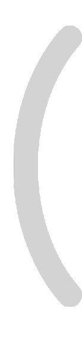

莘莘入耳
标准声音
语音讲解
有声课件
字幕变音
Browse file

生成音频输出
模型音频等基础设置
其他设置选项
SOVICS模型选用
GPT模型选用
参考音频
使用录音或上传音频
参考语种
即参考音频的文本语种
合成语种
即合成音频的文本语种
怎么切分
音频音色变化功能
“其他设置选项>调整语速和音色”打开后启动可以使用，开启后需填写原音频的文本作为合成文本，仅在该功能下可使用无合成文本模式
Open file
无合成文本模式
音量
语速
停顿
温度
在语音合成中，温度帮助控制生成的多样性和预测性：低温度让语音听起来更加自然和一致，而高温度让语音更加多样和不可预测。
top_k
在语音合成中，Top-k 采样帮助模型在生成时从最可能的选项中选择，从而使生成的语音更加连贯和可理解，但也可能减少其多样性。
top_p
在语音合成中，Top-p 采样让模型根据当前的情况决定考虑多少可能的选项，既保持了内容的相关性，又允许了一定程度的创新和多样性。
采样步数
去噪的过程就被称为采样，不同的采样方法就表示不同的去噪方式，要进行去噪的次数，就是采样步数
调整语速和音色
直接对上次合成结果调整语速和音色。防止随机性。该项启动方可进行音色变换功能。
超分选项
音频后处理增强功能，主要用于提升合成语音的清晰度和音质。
无参考文本模式
生成
picture